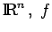
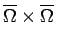
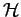
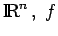
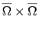
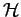
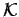
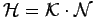
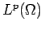

Inhalt Index DeskTop Bronstein

 Funktionalanalysis Nichtlineare Operatoren Beispiele nichtlinearer Operatoren
Funktionalanalysis Nichtlineare Operatoren Beispiele nichtlinearer Operatoren


Seien  eine relativkompakte Teilmenge aus  eine den CARATHEODORY-Bedingungen genügende und K(x,y) eine stetige Funktion auf . Der nichtlineare Operator  auf
eine relativkompakte Teilmenge aus  eine den CARATHEODORY-Bedingungen genügende und K(x,y) eine stetige Funktion auf . Der nichtlineare Operator  auf 
heißt HAMMERSTEIN-Operator. Mit dem linearen von K als Kern erzeugten Integraloperator 
kann in der Form  geschrieben werden. Genügt nun der Kern K(x,y) der Bedingung
und die Funktion f der Bedingung (12.189), dann ist ein stetiger und kompakter Operator auf .